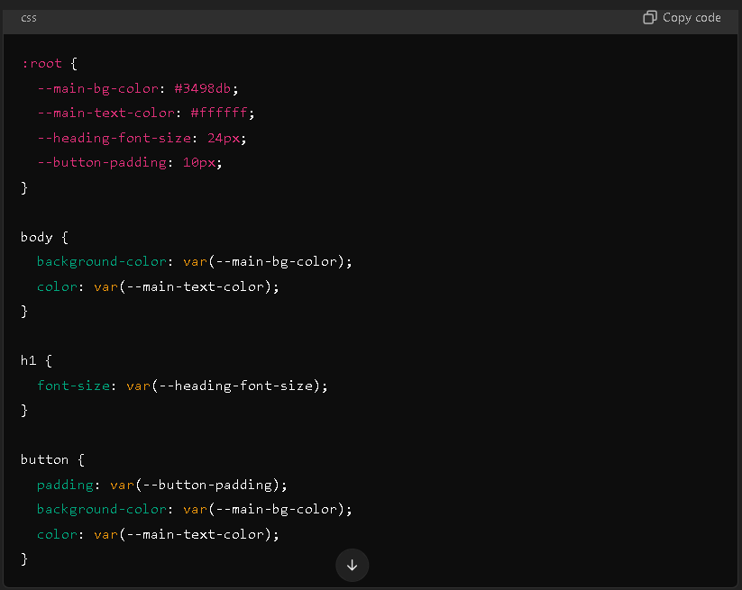
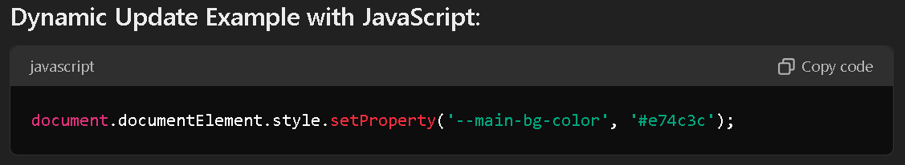

CSS Custom Properties
CSS custom properties, also known as CSS variables, allow you to define reusable values in your stylesheet,
making your
CSS easier to maintain, especially when using the same values (such as colors, font sizes, or margins) in
multiple
places. CSS variables are particularly useful for theming, ensuring consistency, and simplifying updates.
Key Features:
- Declaration: Custom properties are defined using the -- prefix. Typically, they are declared inside the
:root
pseudo-class to make them globally accessible throughout the stylesheet.
- Usage: You can reference the custom property using the var() function wherever it is needed.
-
Scoping: Variables can be scoped to a specific element or globally defined. If defined in a specific
element, they apply
only within that element and its children.
Example:

Explanation:
- `:root`: Custom properties like `--main-bg-color`, `--main-text-color`, etc., are declared inside the
`:root` to make them
globally accessible.
- `var()`: The `var()` function is used to reference the custom property. For example, the body background
color is set to
`var(--main-bg-color)`.
Benefits:
- Maintainability: You only need to change the value in one place to update it everywhere it's used.
- Reusability: Values such as colors, sizes, or spacing can be reused across different elements.
- Theming: Custom properties can be easily adapted to create themes by simply changing the values of the
variables.
- JavaScript Compatibility: CSS custom properties can be dynamically updated via JavaScript, adding further
flexibility.
Dynamic Updates:
Custom properties can be updated dynamically using JavaScript, allowing for changes based on user interactions
or other
events. For example:
This updates the `--main-bg-color` to a new color dynamically without modifying the CSS file.

Conclusion:
CSS custom properties (variables) help create more maintainable, flexible, and efficient styles by centralizing
common
values, allowing for easier global updates, theming, and dynamic changes.
My Skills
HTML
CSS
JavaScript
PHP
Python